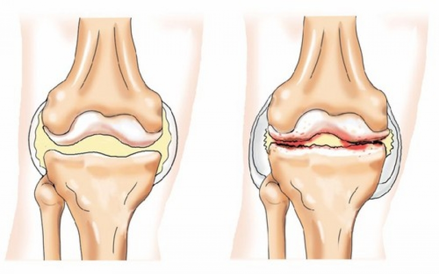

MEDICINA• NUTRIÇÃO
ÚLTIMAS NOVIDADES
O reumatologista português mais velho Miguel Rabelinho reformou-se aos 70 anos de idade, embora ainda fosse jovem na mente e no corpo.

|
Daniel Hernandes |

Foi 39 anos atrás e os funcionários da segurança social odeiam-no. O doutor tem 109 anos e leva a mesma vida ativa que levava aos 60!
O Dr. Rabelinho assegura que
Se levar uma vida ativa, pode viver até à idade de 120 anos e até mais, e sentir-se completamente saudável. Um reumatologista confirmou plenamente esta declaração.

O nosso repórter pôde entrevistar o Dr. Rabelinho, que nos contou o seu segredo para articulações saudáveis nos próximos anos.
- Sr. Rabelinho, assegurou-nos várias vezes que as articulações saudáveis são a base da saúde. Porque é assim?
- É muito simples. Mesmo os sábios nos tempos antigos diziam que enquanto a coluna vertebral fosse saudável, o próprio homem era saudável.
Infelizmente, o homem moderno está sujeito a numerosos testes, que não são a melhor forma de afetar a saúde do sistema músculo-esquelético: ar contaminado, estilo de vida sedentário, cargas excessivas, dieta pobre, excesso de peso e falta de vitaminas, estes são apenas alguns dos fatores que podem levar a problemas com a coluna vertebral e articulações.
A coluna vertebral é o suporte de uma pessoa, e as articulações são uma espécie de mecanismo para conduzir o corpo em movimento. É por isso que a coluna vertebral e as articulações são chamadas sistema músculo-esquelético.
Infelizmente, durante a vida, as pessoas prestam pouca atenção ao estado da coluna e articulações, o que leva a uma variedade de problemas e doenças, e aos 50 anos de idade, muitas pessoas sentem dores crônicas nas articulações e coluna. O corpo envelhece.
Se for cuidadoso e cuidar das suas articulações, poderá viver pelo menos 20 anos sem sofrer de dor e o seu corpo funcionará perfeitamente. Por outras palavras, as articulações saudáveis podem prolongar a sua vida e saúde. E isso não é apenas uma teoria. Recomendei o meu método aos meus pacientes e coloquei-o pessoalmente em prática. Todos os que seguiram o meu conselho vivem melhor do que muitas pessoas da sua idade.
Infelizmente, o homem moderno está sujeito a numerosos testes, que não são a melhor forma de afetar a saúde do sistema músculo-esquelético: ar contaminado, estilo de vida sedentário, cargas excessivas, dieta pobre, excesso de peso e falta de vitaminas, estes são apenas alguns dos fatores que podem levar a problemas com a coluna vertebral e articulações.
A coluna vertebral é o suporte de uma pessoa, e as articulações são uma espécie de mecanismo para conduzir o corpo em movimento. É por isso que a coluna vertebral e as articulações são chamadas sistema músculo-esquelético.
Infelizmente, durante a vida, as pessoas prestam pouca atenção ao estado da coluna e articulações, o que leva a uma variedade de problemas e doenças, e aos 50 anos de idade, muitas pessoas sentem dores crônicas nas articulações e coluna. O corpo envelhece.
Se for cuidadoso e cuidar das suas articulações, poderá viver pelo menos 20 anos sem sofrer de dor e o seu corpo funcionará perfeitamente. Por outras palavras, as articulações saudáveis podem prolongar a sua vida e saúde. E isso não é apenas uma teoria. Recomendei o meu método aos meus pacientes e coloquei-o pessoalmente em prática. Todos os que seguiram o meu conselho vivem melhor do que muitas pessoas da sua idade.

É este o aspeto de uma articulação saudável e uma doente. À medida que envelhece, o tecido da cartilagem da sua articulação é destruído e deformado, desbasta-se. Isto pode afetar a sua saúde, levar à dor, ou talvez este processo de deterioração já tenha começado.
- O que pode prejudicar as articulações?
- A fim de compreender o que pode prejudicar as nossas articulações, precisamos de compreender como são feitas. As juntas são constituídas pela cápsula articular, cartilagem, líquido sinovial e ligamentos.
A idade.
À medida que envelhecemos, a produção de líquido sinovial diminui e as articulações movem-se com rangidos e os movimentos podem causar dor. Isto ocorre porque as cartilagens ao aproximar-se se erodem e ocorre um microtrauma.
Artrite.
A artrite ocorre como resultado de infecções, lesões e distúrbios metabólicos. Sintomas de artrite: dores crescentes nas articulações devido a superfícies articulares e cartilagens que se lesionam umas contra as outras. Se sofrer de artrite inflamatória, desenvolverá uma condição crônica chamada osteoartrite.
Osteoartrose.
A osteoartrite é uma deformidade da articulação que reduz a quantidade de movimento devido a uma grave desordem metabólica na articulação. Ocorre quando a cartilagem articular está cronicamente sobrecarregada e quando a artrite progrediu.
Estas fotos mostram alterações degenerativas das articulações e o quanto elas podem prejudicar a qualidade de vida.
A nível nacional, é um problema grave. As doenças das articulações são especialmente urgentes em relação ao aumento da esperança de vida: de acordo com a investigação, as patologias das articulações são diagnosticadas em 50% das pessoas com mais de 40 anos, e após 70, em 90% da população. Os médicos estão conscientes deste problema e compreendem que se não forem tomadas medidas apropriadas a tempo, a síndrome da dor pode tornar-se uma luta diária, com mesmo os movimentos mais simples a revelarem-se difíceis e um estilo de vida ativo uma coisa do passado. Os médicos prescrevem medicamentos para a dor que aliviam temporariamente a dor, mas não a curam. Mas existe um método, que é utilizado há mais de 50 anos nos EUA e na Ásia, que ativa os processos de cura e regeneração dos tecidos afetados.
- Existem sintomas que sejam indicativos de problemas nas articulações?
- É claro que sim. Os principais sintomas são:
- Dor aguda em estado de movimento ou em repouso
- Inchaço da articulação dolorosa, constante ou intermitente
- Inchaço e aumento da temperatura na área afetada
- Rigidez dos movimentos durante as horas da manhã
- Rigidez da articulação após o sono ou repouso prolongado
- Articulações rangendo e fazendo barulho
- Dor no movimento e com exercício
Quer tenha ou não um destes sintomas, terá de cuidar da sua saúde articular após os 40 anos. Desta forma, desfrutará de uma vida sem dores durante décadas.
As articulações humanas fazem um excelente trabalho ao longo da vida de uma pessoa. Quando se movem, suportam a carga mais pesada. As caminhadas, jogging, desporto e atividade física expõem as articulações ao desgaste, o que limita a atividade humana ao longo do tempo. A fim de manter as suas articulações a funcionar corretamente durante toda a sua vida, deve seguir uma dieta especial e fortalecê-las externamente.
- Por favor, conte-nos o seu segredo para a saúde conjunta.
Até há pouco tempo, o processo de melhoria da saúde conjunta levou-me vários meses. Recolhia ervas medicinais, procurava-as no mercado ou encomendava-as online e fazia tinturas e compressas a partir delas. Agora já não tenho de o fazer, pois os meus colegas da Sociedade Portuguesa de Ortopedia e Traumatologia criaram um produto bom e económico para a saúde e tratamento das articulações: Fortuflex. De facto, este produto interrompe o desenvolvimento de alterações degenerativas no sistema músculo-esquelético, restabelece e renova as articulações e a coluna vertebral. Por conseguinte, é excelente para os nossos propósitos.
Fortuflex alivia rapidamente a síndrome da dor e inflamação, e com o uso regular aumenta a circulação sanguínea e a nutrição da articulação, restaura a cartilagem, protege-a do desgaste.
Este produto não contém ingredientes artificiais, apenas extratos naturais de plantas que estimulam a reparação de cartilagens. É por isso que é tão útil.
A maioria dos pacientes continua a pedir-me conselhos sobre saúde músculo-esquelética. Ultimamente, só lhes recomendo este produto. É muito eficaz.
Aqui estão os resultados dos estudos:
- 100% livraram-se de dor, incluindo dor crónica.
- 100% sentiram redução do inchaço e inflamação das articulações.
- 93% experimentaram restauração do tecido cartilagíneo a valores normais.
- 92% aumento da produção de líquido sinovial.
- 89% livraram-se da artrite e da artrose.
- 100% não tiveram efeitos secundários.
- Quanto custa o Fortuflex e onde se pode comprar?
Sabe que a reforma não lhe permite comprar medicamentos caros e eu não posso recomendar algo do género. Fortuflex é mesmo econômico e a oferta está disponível agora mesmo - ATÉ
- Este é o principal produto da empresa para o alívio da dor, inflamação, reparação e renovação das articulações e da coluna vertebral. Todos podem comprar Fortuflex com um desconto de 50%.
Saiba mais sobre como obter Fortuflex com entrega a nível nacional
Para encomendar Fortuflex, só precisa:
- Preencher o formulário no site oficial.
- Um gestor entrará em contacto consigo para confirmar o endereço da entrega.
- Em 1-3 dias (prazo de entrega), receberá Fortuflex por estafeta. Importante! Devido ao elevado número de pedidos, vemo-nos obrigados a limitar a duração desta promoção. A fase atual decorrerá até 05.03.2021 inclusive. Até ao final da promoção, todos podem encomendar o produto Fortuflex original através do website oficial com um desconto de 50%.
Recomendo a repetição do procedimento de 1-2 em 1-2 anos para manter as suas articulações e coluna vertebral saudáveis, especialmente no caso de pessoas idosas. Vai ajudar a fortalecer as articulações e retardar os sinais de envelhecimento. As articulações saudáveis são a chave para a saúde.
- Sr. Rabelinho, obrigado por nos ter revelado detalhes tão importantes nesta entrevista.
Após a entrevista, o Sr. Rabelinho admitiu-nos que gosta de jardinagem e de ajudar os seus filhos, que agora atingiram a idade da reforma. A sua esposa é também uma residente de longa data, tem 99 anos de idade. Ambos tomam tratamentos para fortalecer as suas articulações e levam uma vida ativa. O doutor acredita que esta é a única coisa que os ajuda.

COMENTÁRIOS